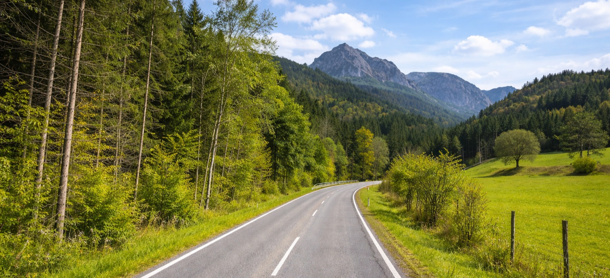

5. Großalmstraße
47.84872929950052, 13.659273879779022

A Großalmstraße egy erdős hegyi út Felső‑Ausztriában, amely Steinbach am Attersee és Neukirchen am Traunsee között teremt közvetlen kapcsolatot. A teljes átkelés hossza nagyjából 16 km, a legmagasabb pontja 829 méter, a Krahbergtaferl nevű nyereg.
Az út jellegzetessége, hogy széles, jó minőségű aszfalton fut, és hosszú, íves kanyarokkal kapaszkodik a fenyőkkel borított oldalak között. A középvonal nem sziklafalak közt vezet, inkább puha, zöld hegyi tájban, ahol a domborzat folyamatosan hullámzik.
A táv közepe táján a Taferlklause‑tó környéke természetes pihenőpont, itt vendéglátóhely is található. A környék a Salzkammergut átmeneti zónája, egyszerre érzed a Traunsee felől érkező hegyvidéki karaktert és az Attersee tágasabb, tóparti hangulatát.